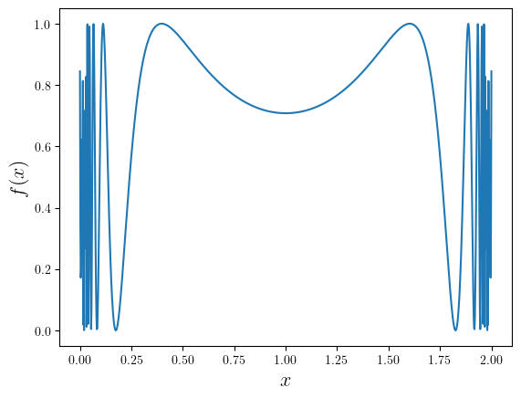

Monte Carlo Methods
Monte Carlo Methods
Last week, we've seen one class of Monte Carlo methods, where we can follow the random trajectory of a large number of particles, to simulate the solution of a diffusion-like PDE.
Monte Carlo methods are a large class of numerical algorithms that rely on random numbers to solve problems. They are often used when deterministic methods are too difficult or impossible to apply.
Monte Carlo Integration
We have already seen Monte Carlo integration:

Monte Carlo Integration
Given $f(\mathbf{x})$ and we want to evaluate a definite integral: $$ I = \int_S f(\mathbf{x}) d\mathbf{x} $$ where $S$ is a spatial region that may be irregular.
If $f(\mathbf{x}) = 1$, then this integral simply gives the volume of $S$.
Monte Carlo Integration
Monte Carlo integration evaluates the integral by repeatedly taking a random point $\mathbf{x}$ in the region $S$, then a random number $y\in [f_\mathrm{min}, f_\mathrm{max}]$ and compare it with $f(\mathbf{x})$.
We count how many $y$ values are less than $f(\mathbf{x})$. The integral $I$ can be estimated as: $$ I = \frac{\text{# of points under $f$}}{\text{Total # of points}}\times V $$
$V$ is the volume of $S$ times $f_\mathrm{max} - f_\mathrm{min}$.
Monte Carlo Integration
Let's look at an extreme example. Consider the integral: $$ I = \int_0^2 \sin^2\left(\frac{1}{x(2-x)}\right)\,dx $$
Monte Carlo Integration
The function is well-behaved in the middle of the interval, but extremely oscillatory near the two endpoints.
Monte Carlo Integration
The correct value of the integral is around $1.4514$, but 10-point Gauss quadrature gives around $57.9290$!
Adaptive Simpson's rule integration gives around $5004$, and has trouble converging at all.
Monte Carlo integration with $1,000,000$ samples gives me $1.45155$, very close to the actual value.
Monte Carlo Integration
How to estimate the error on Monte Carlo integration?
Let $I = (k/N)V$, where $k$ is the number of points under $f$ and $N$ is the total number of points. The probability of a single point falling under $f$ is $p = I/V$. The probability of getting exactly $k$ points under the curve is: $$ P(k) = {N\choose k}p^k (1-p)^{N-k} $$
The number of points under the curve follows a binomial distribution.
Monte Carlo Integration
The variance of binomial distribution is: $$ \sigma^2 = Np(1-p) $$
Therefore, the expected error on the integral is: $$ \langle \epsilon\rangle = \sigma\frac{V}{N} = \sqrt{\frac{p(1-p)}{N}}V $$
The error of Monte Carlo integration scales with $1/\sqrt{N}$.
Monte Carlo Integration
If $f$ changes drastically within the integration domain, it is sometimes difficult to directly implement this version of Monte Carlo integration. An alternative version is usually more straightforward.
We can always write the integral as: $$ I = \int_S f(\mathbf{x}) d\mathbf{x} = \langle f\rangle\int_S d\mathbf{x} $$ where $\langle f\rangle$ is the average value of $f$ over the integration domain.
Monte Carlo Integration
Therefore, finding the integral of $f$ becomes equivalent to finding the average value of $f$ plus finding the volume of the integration domain.
To find the average value of $f$, we can simply take $N$ random points in the integration domain and take the average of $f$ at these points: $$ \langle f\rangle = \frac{1}{N}\sum_{i=1}^N f(\mathbf{x}_i) $$
For complicated integration domains, we can use another Monte Carlo integration to find the volume of the integration domain.
Monte Carlo Integration
This method has the advantage of not referring to $f_\mathrm{max}$ or $f_\mathrm{min}$. Therefore, it can handle improper integrals like the following:
$$ \int_0^1 \frac{1}{\sqrt{x}}\,dx = 2 $$Using $1,000,000$ samples, my Monte Carlo integration gives $2.0041$.
Monte Carlo Integration
How to estimate the error for the average value method?
The variance of the average value is: $$ \mathrm{Var}(f) = \sigma^2 = \frac{1}{N}\sum_{i=1}^N (f(\mathbf{x}_i) - \langle f\rangle)^2 $$ Therefore, the expected error on the integral is given by: $$ \langle \epsilon\rangle = \frac{\sqrt{N\times \mathrm{Var}(f)}}{N}\mathrm{Vol}(S) \sim \frac{1}{\sqrt{N}}\mathrm{Vol}(S) $$
Importance Sampling
For functions with extreme variance in the integration domain, Monte Carlo integration will in general suffer from a large statistical error. How to reduce it?
The typical solution is to draw points $\mathbf{x}_i$ from a non-uniform distribution that can help reduce the variance of the integrand. This technique is called importance sampling.
Importance Sampling
For a general function $g(\mathbf{x})$, we can define a weighted average over the region $S$ as: $$ \langle g\rangle_w = \frac{\int_S g(\mathbf{x}) w(\mathbf{x}) d\mathbf{x}}{\int_S w(\mathbf{x}) d\mathbf{x}} $$ where $w(\mathbf{x})$ is a weight function that we can choose arbitrarily.
Importance Sampling
For Monte Carlo integration, we can choose an arbitrary weight function $w(\mathbf{x})$ and rewrite the integral as: $$ I = \int_S f(\mathbf{x}) d\mathbf{x} = \int_S \frac{f(\mathbf{x})}{w(\mathbf{x})} w(\mathbf{x}) d\mathbf{x} $$
This allows us to write the original integral as a weighted average of $f/w$: $$ I = \left< \frac{f}{w}\right>_w \int_S w(\mathbf{x}) d\mathbf{x} $$
This is a generalization of our average value method, where $w(\mathbf{x}) = 1$.
Importance Sampling
How do we actually compute the weighted average?
We can define the probability density function $p(\mathbf{x})$ as: $$ p(\mathbf{x}) = \frac{w(\mathbf{x})}{\int_S w(\mathbf{x}) d\mathbf{x}} $$ and draw random points $\mathbf{x}_i$ from this distribution.
Then the weighted average of any function $g(\mathbf{x})$ can be computed as: $$ \langle g\rangle_w = \int_S g(\mathbf{x}) p(\mathbf{x}) d\mathbf{x} \approx \frac{1}{N}\sum_{i=1}^N g(\mathbf{x}_i) $$
Importance Sampling
Therefore, the recipe for doing importance sampling to evaluate the integral of function $f$ is to compute the following sum: $$ I = \frac{1}{N}\sum_{i=1}^N \frac{f(\mathbf{x}_i)}{w(\mathbf{x}_i)} \int_S w(\mathbf{x}) d\mathbf{x} $$
The sample points $\mathbf{x}_i$ are drawn with the probability density function $p(\mathbf{x})$: $$ p(\mathbf{x}) = \frac{w(\mathbf{x})}{\int_S w(\mathbf{x}) d\mathbf{x}} $$
Importance Sampling
The statistical error associated with this method can be estimated as: $$ \langle \varepsilon\rangle = \frac{\sqrt{N\times \mathrm{Var}(f/w)}}{N}\int_S w(\mathbf{x}) d\mathbf{x} $$
For appropriately chosen weight function $w(\mathbf{x})$, the variance of $f/w$ can be much smaller than the variance of $f$.